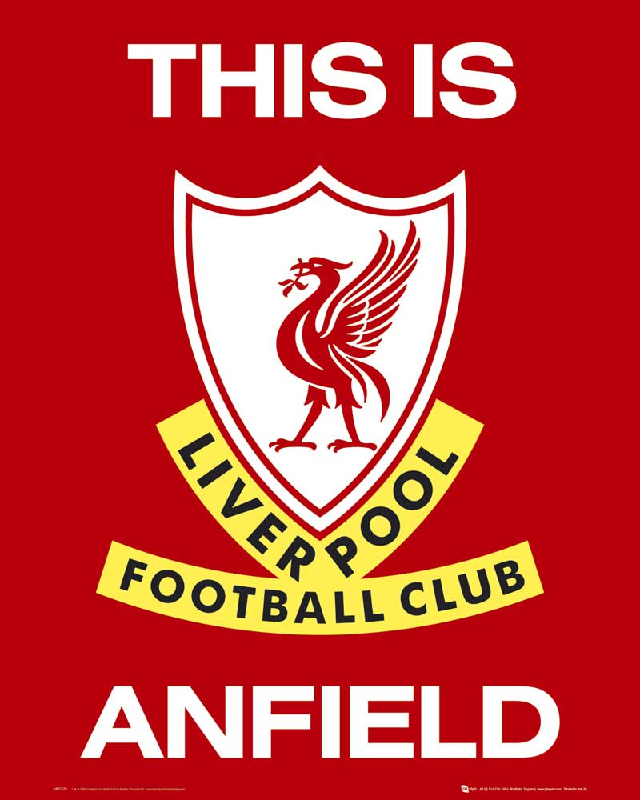
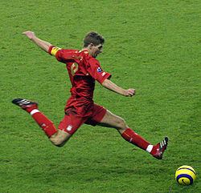
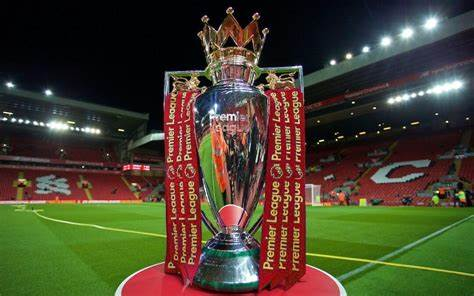

A Liverpool Football Club 1892-ben alapított angol labdarúgócsapat, amely az első osztályban szerepel. A Liverpool FC becenevükön "A Vörösök" (The Reds) az angol bajnoki címeket tekintve a második legsikeresebb klub: 19-szeres angol bajnok. Emellett a csapat 8-szoros FA-kupa-győztes, 9-szeres Ligakupa-győztes, valamint 15-szörös Szuperkupa-győztes.
John Houlding politikus és üzletember nagy szerepet játszott a Liverpool FC megszületésében. 1892-ben, az akkor még az Anfielden játszó Everton a bérleti díj miatt kialakult vita után elhagyta a stadiont, ekkor Houlding otthagyta a "Kékek"-et, és néhány szurkolóval és játékossal elhatározta, hogy egy új csapatot állítanak fel. 1892. március 15-én, az Anfield Road 73. alatti házban megalapították a Liverpool Football Clubot, és ezzel kezdetét vette egy később világhírűvé vált klub története.
73 évig az FA-kupa jelentős hiányzó volt a Liverpool trófeagyűjteményéből, ezért sokszor érte a Liverpool-szurkolókat gúny az Everton-drukkerek részéről, hiszen az Everton már birtokolt FA-kupát, míg a Vörösök nem. 1892 és 1965 között a csapat nem kevesebb, mint hatszor hódította el az angol első osztály bajnoki címét, az FA-kupa skalpja azonban egészen '65-ig váratott magára, viszont azóta még 6-ot szereztek, legutóbb 2006-ban, így bőven városi riválisuk fölé nőttek a Vörösök.
1995. december 23-án a Vörösök ismét találkoztak az Arsenallal. A liverpooliak 3–1-es hazai sikernek örülhettek az Anfielden. A meccs mindhárom liverpooli gólját az "isten"-nek becézett Robbie Fowler szerezte. 2001-ben ismét ez volt a párosítás, és az eredmény: Liverpool 4–0 Arsenal. Itt szintén Fowler, illetve Gerrard, Owen és Barmby találataival nyertek a "scouser"-ek. Fowler többször is felhívta magára a figyelmet játékával (például egy Fulham elleni bajnokin 5–0-ra nyert a Liverpool, és mind az 5 gólt Fowler rúgta), így nem véletlen, hogy a csapat oszlopos tagja, és idővel legendája lett, és istennek becézték.
Steven Gerrard, a Liverpool FC korábbi csapatkapitánya. A Liverpool Football Club történetének legsikeresebb éve minden bizonnyal a 2001-es év volt. Bár bajnokságot (FA Premier League) 2001-ben nem nyert, megnyerte viszont az FA-kupát, a Ligakupát (Carling Cup), az angol szuperkupát (FA Community Shield), illetve nemzetközi szinten az UEFA-kupát, és a Bajnokok Ligája 2001-es győztesének (FC Bayern München) legyőzésével az európai szuperkupát is.
